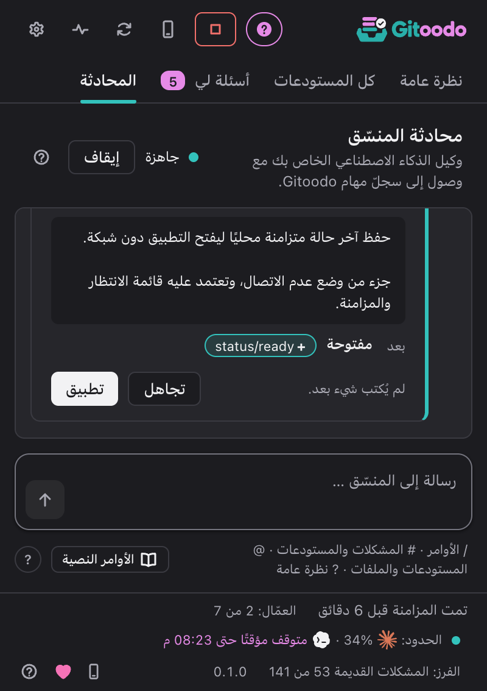

في المحادثة تناقش ما تريد بناءه.
في المحادثة يقترح وكيل البرمجة الذي اخترته مسائل وتسميات وتعليقات في بطاقات. ولا يكتب Gitoodo التغيير في المنصة إلا حين تنقر «تطبيق».
بالرمز / تستدعي أوامر مثل /status أو /pause، وبالرمز # المسائل وطلبات الدمج، وبالرمز @ المستودعات والملفات. وإذا تعثّر شيء، يفحص /doctor الحسابات والخدمات والوكلاء في قائمة واحدة.
تقسّم المشروع الأكبر بالتعاون معها: تقترح كل مسألة جديدة في بطاقة خاصة بها، بعنوان ونص وتسميات. وإذا كانت الفكرة لا تزال غامضة، تطرح عليك المقابلة عند إنشاء مهمة بضع جولات من الأسئلة وتكتب منها الوصف.
